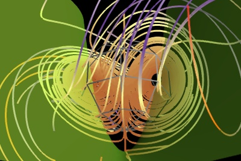

Lorenz example¶
An example displaying the trajectories for the Lorenz system of equations along with the z-nullcline.
The vector field of the Lorenz system flow is integrated to display trajectories using mlab’s flow function: enthought.mayavi.mlab.flow().
The z-nullcline is plotted by extracting the z component of the vector field data source with the ExtractVectorComponent filter, and applying an IsoSurface module on this scalar component.
Python source code: lorenz.py
# Author: Prabhu Ramachandran <prabhu@aero.iitb.ac.in>
# Copyright (c) 2008-2009, Enthought, Inc.
# License: BSD Style.
import numpy
from enthought.mayavi import mlab
def lorenz(x, y, z, s=10.,r=28., b=8./3.):
"""The Lorenz system."""
u = s*(y-x)
v = r*x -y - x*z
w = x*y - b*z
return u, v, w
# Sample the space in an interesting region.
x, y, z = numpy.mgrid[-50:50:100j,-50:50:100j,-10:60:70j]
u, v, w = lorenz(x, y, z)
fig = mlab.figure(size=(400, 300), bgcolor=(0, 0, 0))
# Plot the flow of trajectories with suitable parameters.
f = mlab.flow(x, y, z, u, v, w, line_width=3, colormap='Paired')
f.module_manager.scalar_lut_manager.reverse_lut = True
f.stream_tracer.integration_direction = 'both'
f.stream_tracer.maximum_propagation = 200
# Uncomment the following line if you want to hide the seed:
#f.seed.widget.enabled = False
# Extract the z-velocity from the vectors and plot the 0 level set
# hence producing the z-nullcline.
src = f.mlab_source.m_data
e = mlab.pipeline.extract_vector_components(src)
e.component = 'z-component'
zc = mlab.pipeline.iso_surface(e, opacity=0.5, contours=[0,],
color=(0.6, 1, 0.2))
# When using transparency, hiding 'backface' triangles often gives better
# results
zc.actor.property.backface_culling = True
# A nice view of the plot.
mlab.view(140, 120, 113, [0.65, 1.5, 27])
mlab.show()